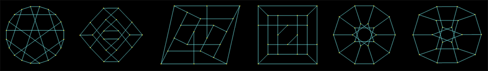

CSE3500: Algorithms and Complexity
Algorithms and Complexity CSE 3500 - Section Z81, Spring 2022
Click for Class Schedule & HW Assignments
General Information
| Instructor: | Dr. Jacek Ossowski |
| Email: | jacek.ossowski@uconn.edu |
| Lectures: | Tu & Th 12:30pm - 1:45pm |
| Class Format: | in-person |
| Location: | DWTN 216 |
| Office Hours: | ♠ |
Other Q&A resource: peer discussion forum will be set up on discord.com. See the "Software" section for instructions on joining our class on Discord.
Textbook
Jon Kleinberg and Eva Tardos
Algorithm Design, Addison Wesley 2006
A set of slides accompanying the textbook have been written by Kevin Wayne at Princeton. We will be using this material frequently.
Recommended books for further reading:
Algorithms by Dasgupta, Papadimitriou, and Vazirani
Description of Course
In this introductory course in algorithms, we will study efficient solutions to computational problems in graph theory, geometry, task scheduling, image processing and others. We will apply the following major techniques: greedy algorithms, "divide and conquer", dynamic programming, and network flows. We will also study the current limits of efficient computability by studying the concept of NP-hardness and surveying a set of classic NP-complete problems.
The study of algorithms, their correctness and efficiency, requires a proper mathematical foundation and a high standard in logical reasoning. We will review some of the needed concepts and practice useful proof techniques on many examples.
Our main focus will be algorithmic ideas, analysis and design; the course will have, however, a programming component where we will see how the learned algorithms translate into programs.
Homework
- There will be 6 written and 4 programming homework assignments.
-
The written assignments should be submitted to HuskyCT and should be typed using Microsoft Word or Latex. Manuscripts in longhand will be accepted only if they are neetly written. Penalties will be applied for illegibilty, and we reserve the right to reject papers that are unacceptably messy.
No late homework will be accepted.
-
If you have any questions regarding your homework, test or quiz scores, you must address them within two weeks after those scores have been received. Scores more than two weeks old will not be reviewed.
-
The binding due date of an assignment will be given on the assignment's statement. Tentative due dates are listed on the course's approximate schedule.
Programming Component
We will have 4 programming assignments demonstrating how the learned algorithms work in practice. The assignments will be posted as projects on Mimir (details to follow soon).
You will need to write your programs in Python -- the dominant language in the industry and in scientific computing.
Exams
- There will be one midterm exam and a final exam.
-
We will have short (≤ 10 min) in-class pop-quizzes testing whether you are following the basic concepts given in the lectures. Quizzes will account
for 5% of your final grade. They will be given at most once a week and at least once per two weeks.
- There will be no make-up exams given after the exam date. If you know in advance that you will have to miss an exam, you must check with me (in advance) to avoid getting a zero for that exam. In case of an illness on an exam date, please contact me as soon as possible, so that appropriate arrangements can be made.
Attendance
Since it is important to attend lectures, I will be taking attendance. You will be allowed three unexcused absences during the semester. Attendance will account for 5% of
your final grade.
Grading
| Participation: |
5% |
| In-class Quizzes: |
5% |
| Programming Assignments: |
15% |
| Written Assignments: |
25% |
| Midterm Exam: |
25% |
| Final Exam: |
25% |
The worst two quizzes, the worst written assignment, and the worst programming assignment will not be counted towards your grade.
Grading Scale
| Numeric Grade |
Letter Grade |
| 93+ |
A |
| 90-92 |
A- |
| 87-89 |
B+ |
| 83-86 |
B |
| 80-82 |
B- |
| 77-79 |
C+ |
| 73-76 |
C |
| 70-72 |
C- |
| 67-69 |
D+ |
| 63-66 |
D |
| 60-62 |
D- |
| 0-59 |
F |
Discord Discussion Forum
If you have a question regarding the material or homework, chances are that somebody might have encountered that problem already. Check our Discord discussion forum first and post your question there if it has not been answered yet.
If you don't get the answer this way in a reasonable amount of time, (only then) you can ask me that question outside of my office hours. Naturally, you can ask me any question regarding the course during my office hours.
Hardware and Technical Requirements
The hardware/technical requirements for this course include:
-
Computer with (per university requirements)
-
Dedicated access to high-speed internet with a minimum speed of 1.5 Mbps (4 Mbps or higher is recommended).
-
Webcam (for proctoring during remote exams)
-
Microphone (a working microphone in your computer is fine)
-
Respondus Lockdown Browser (if exams are held remotely)
-
If exams are held remotely, it will be your responsibility to ensure that all the involved technology works as expected (i.e., your computer, internet, webcam, etc.).
-
Fortunately, all students I gave a remote exam to in the past were able solve all their technical issues. Being able to set up the equipment needed for remote learning and
assure that it works properly has become a prerequisite of academic coursework.
Software
- HuskyCT/Blackboard (free) - Hosts all class materials and meetings
- Mimir (free) - Online programming platform
- Use the link in the "Course Content" area on HuskyCT to join this class on Mimir.
- Privacy Statement
- Discord (free) - Communication platform for discussions. Use the link in the "Course Content" area on HuskyCT to join this class on Discord.
Install (cut-and-paste https://discord.com/download into the browser if the link does not work)
- Privacy Statement (cut-and-paste https://discord.com/privacy into the browser if the link does not work)
Python3 (free) - Programming language used in course
- Install (cut-and-paste https://www.python.org/downloads/into the browser if the link does not work)
- Privacy Statement (cut-and-paste https://www.python.org/privacy/ into the browser if the link does not work)
For information on managing your privacy at the University of Connecticut, visit the University’s Privacy page.
NOTE: This course has NOT been designed for use with mobile devices.
Communication
- The homework assignments, solutions, readings, and announcements will be posted on HuskyCT.
- Please ensure that you can receive emails from HuskyCT so that you can get course announcements.
- Discussions will take place on Discord. I will also answer questions Discord, but I encourage students to try and jointly answer questions as well.
- Do not ask for or provide actual solutions to homework/lab problems on Discord.
- Personal questions should be sent directly to my email or handled in person during office hours.
- I will not answer emails from Friday 6pm to Monday 9am.
Collaboration
All homework assignments must be completed individually. It is okay for you to discuss a problem with a classmate as long you abide by the following conditions:
-
Each student you collaborate with should be named on the written homework assignment (or in a comment on top of a programming assigment).
-
You must first consider each problem on your own and generate ideas on how to solve the problem.
-
You may discuss problems and ideas jointly. The goal of collaboration is to understand the high level ideas of the problem. Do not go further than this.
-
You must write solutions completely on your own.
-
Do not use other resources (outside of your textbooks and collaborators) to attempt to find the problem or the solution. This includes using the internet to search for parts of the problem.
Academic Honesty
This course expects all students to act in accordance with the Guidelines for Academic Integrity at the University of Connecticut. If you have questions about academic integrity or intellectual property, you should consult with your instructor. Additionally, consult UConn’s guidelines for academic integrity.
The collaboration policy described above is designed to allow students the resources to succeed while ensuring they learn and master the material. If you are unsure if something is acceptable according to the collaboration policy, talk to me!
Violations of this policy will be considered violations of the academic integrity policy and will be reported to the Academic Integrity Hearing Board.
Consequences may include (but are not limited to) failure of the class. Academic misconduct includes, but is not limited to:
- not reporting collaborators
- jointly writing solutions
- copying or plagiarizing solutions from other sources
- sharing any code, including test cases, with classmates on homework assignments. Screen sharing code on any platform (Discord, VS Code LiveShare, …) counts as sharing code.
- unintentionally sharing code through platforms mentioned above, or sharing more code than you intend.
- it is your responsibility to be mindful of who can access your files and which files they can access;
note that it may be easy for strangers to access voice channels on a Discord server and that many code sharing platforms (e.g. VS Code LiveShare)
give participants access to all files and directories within the directory you share.
- cheating on the exams
- discussing any information about exams with classmates before all grades are posted.
- posting questions on forums like Reddit, StackOverflow, or Chegg. You can refer to previously posted questions on these forums, but not create new ones for this course.
- violating the spirit of an assignment (e.g. using a series of if statements to pass test cases in Mimir)
We will use Stanford's MOSS (privacy policy), a tool developed to detect similarities in programming assignments, on all programming assignments.
Students with Disabilities
The University of Connecticut is committed to protecting the rights of individuals with disabilities and assuring that the learning environment is accessible. If you anticipate or experience physical or academic barriers based on disability or pregnancy, please let me know immediately so that we can discuss options. Students who require accommodations should contact the Center for Students with Disabilities, Wilbur Cross Building Room 204, (860) 486-2020, or http://csd.uconn.edu/.
Copyright
My lectures, notes, handouts, and displays are protected by state common law and federal copyright law. They are my own original expression. Students may take notes. In addition, students will be consulted before using their solutions either with or without their name.
Last modified: Jan. 11, 2022